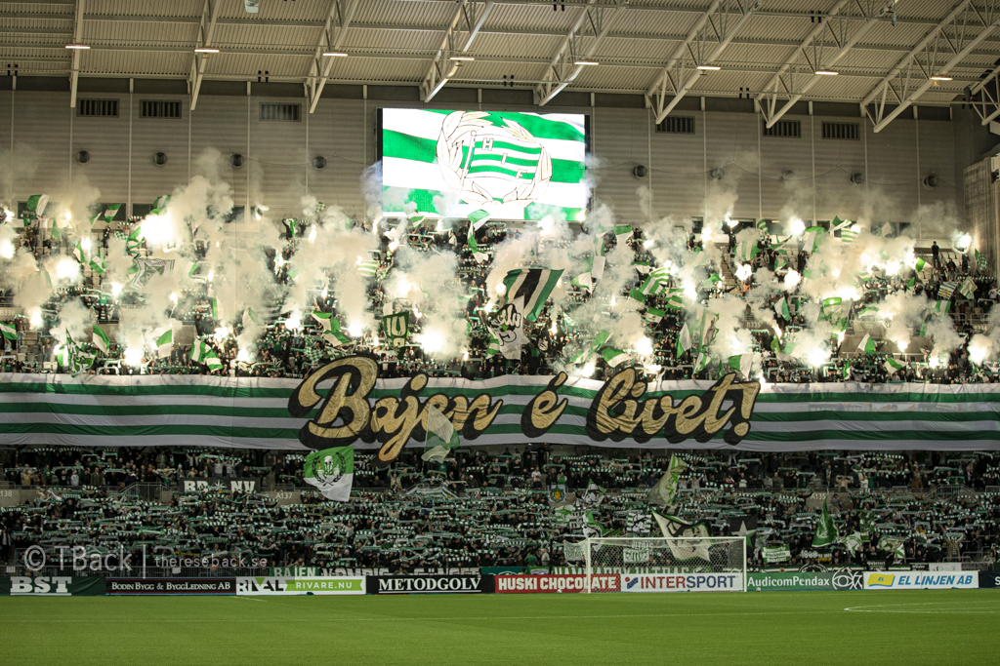
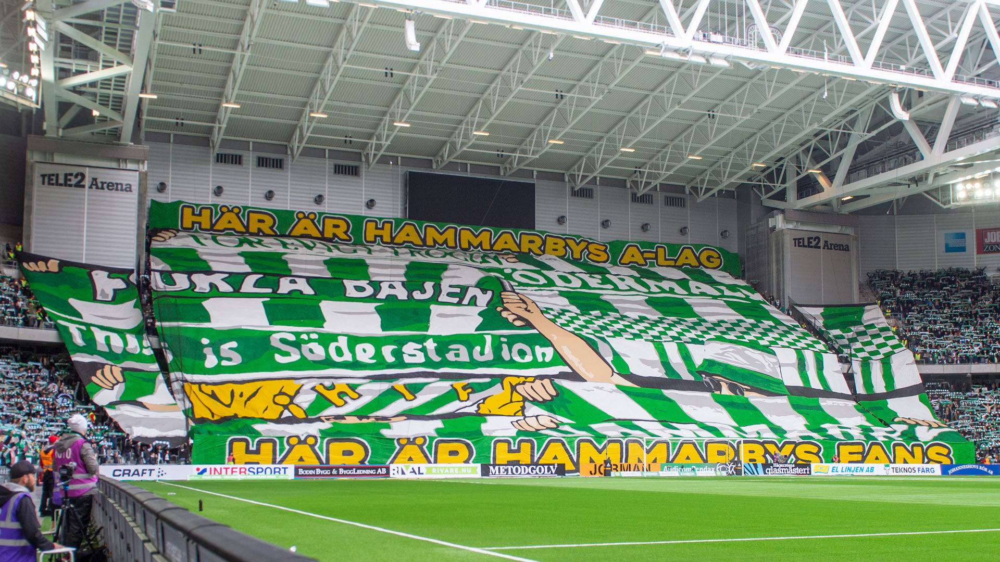
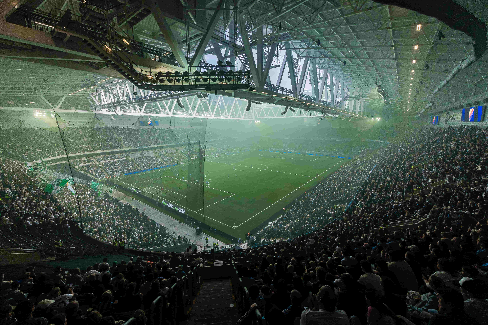

Hammarby IF

Hammarby IF har skapat en läktarkultur som är unik i Norden, där atmosfären inte bara begränsas till de nittio minuterna på planen utan börjar flera timmar innan avspark. De massiva marscherna från Medborgarplatsen över Skanstullsbron är en syn för sig, där tusentals grönvita supportrar tar över stadsbilden i en gemensam manifestation av lokal identitet. Denna tradition bygger upp en förväntan och en elektrisk stämning som gör att energin är på topp redan när publiken kliver in på 3 arena Arena.

Inne på arenan möts man av en sällsynt kombination av sydländsk visuell stil och en djupt rotad svensk sångtradition. Klubbens hymn, ”Just idag är jag stark”, är kanske den mest kraftfulla i svensk idrott och skapar en stämning av gemenskap och optimism som genomsyrar hela arenan. Hammarbys supportrar är kända för att vara innovativa och kreativa, med tifon som ofta hyllar Södermalms historia och klubbens hjältar, vilket ger en personlig och varm touch till den annars intensiva inramningen.

Det mest imponerande med Hammarbys atmosfär är dock den enorma uthålligheten och den positiva energin. Trots år av sportsliga prövningar har klubben lyckats behålla och till och med öka sitt publikstöd, vilket har gjort dem till ett fenomen även utanför Sveriges gränser. Det är en atmosfär där humor och självdistans blandas med en obeveklig kärlek till klubben, vilket skapar en inkluderande men samtidigt otroligt ljudlig och passionerad miljö som få andra lag i Europa kan mäta sig med.